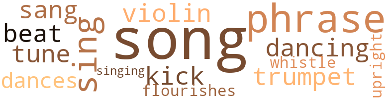
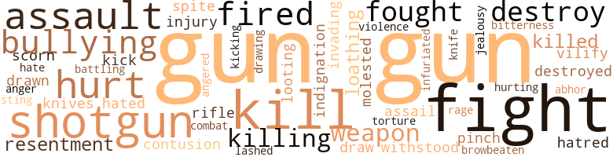
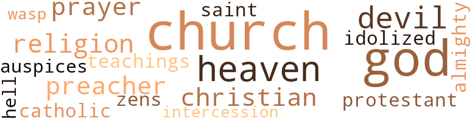

Interpositionulification: What the Negro May Expect, by Yancy, A.H. (1959)
21 music-related terms matched in this text.
Most frequent terms in this topic: song (2); songs (2); phrase (2); violin (1); singing (1)
cornet.n.01
Definition: a brass musical instrument with a brilliant tone; has a narrow tube and a flared bell and is played by means of valves
| word | sentence |
|---|---|
| trumpet | The moments flew , the trumpet blew , As always , at camp meeting . |
dance.n.01
Definition: an artistic form of nonverbal communication
| word | sentence |
|---|---|
| dances | The Negro men were kept from dances and social gatherings by their fellow troops , and ridiculed in public . |
dance.v.03
Definition: skip, leap, or move up and down or sideways
| word | sentence |
|---|---|
| dancing | I do n't know what they answered , but they burst out laughing at him and began dancing around the yard . |
flourish.n.05
Definition: (music) a short lively tune played on brass instruments
| word | sentence |
|---|---|
| flourishes | Juliet set copy material in a Spencerian hand , with the shading and flourishes so pqpular at that time . |
kick.v.04
Definition: kick a leg up
| word | sentence |
|---|---|
| kick | Get out before I kick you out ! |
phrase.n.02
Definition: a short musical passage
| word | sentence |
|---|---|
| phrase | The United States representative en - gaged him in serious conversation for perhaps half an hour , in Portuguese that was too rapidly spoken for me to catch anything but an occasional phrase . |
| phrase | They long for a word , yes , a line or a phrase , A word that means can and means cant ; A word that is free from a technical haze That means both a sinner and saint . |
| phrases | Since he knew very few , he tried to remember phrases from his father 's deeds , con - tracts , and notes , and used them whenever they were ap - plicable . |
rhythm.n.01
Definition: the basic rhythmic unit in a piece of music
| word | sentence |
|---|---|
| Beat | As soon as he was out the door , the owner said , " Beat that man to the bank . " |
sing.v.02
Definition: produce tones with the voice
| word | sentence |
|---|---|
| sang | The vari - colored birds sang merrily in the deep green foliage of the massive oaks along the roadside in the County of C -- , North Georgia . |
| sings | The old citi - zens of the community will tell you that Tom Ellayton sings Aytch Youkman 's praises to every gathering or indi - vidual that will listen to him . |
| singing | A few days later the same man rode by , singing a dirty song . |
| sing | Why a man with plenty of money would sing bad words when passing was another puzzle , and the reason his mother held the hands of one or both of the boys whenever the mining boss was around was still another subject for the fence comer . |
song.n.01
Definition: a short musical composition with words
| word | sentence |
|---|---|
| songs | Listening to the songs of the birds in the oak trees , Aytch was filled was thrilling anticipation . |
| songs | For a moment , all was quiet , save for the drone of the bees and the birds ' songs . |
| song | A few days later the same man rode by , singing a dirty song . |
| song | And then , there arose a song , the words of which were too filthy to reproduce . |
tune.n.01
Definition: a succession of notes forming a distinctive sequence
| word | sentence |
|---|---|
| tune | She tried to soothe it by shaking the mattress gently and humming a little tune , but it continued to squirm and cry . |
upright.n.02
Definition: a piano with a vertical sounding board
| word | sentence |
|---|---|
| upright | Springing upright , he caught the child by the arm and dragged it to safety . |
violin.n.01
Definition: bowed stringed instrument that is the highest member of the violin family; this instrument has four strings and a hollow body and an unfretted fingerboard and is played with a bow
| word | sentence |
|---|---|
| violin | Her head upon his breast lay back Just like a violin . |
whistle.v.01
Definition: make whistling sounds
| word | sentence |
|---|---|
| whistle | The boiler had a steam whistle of which Aytch grew mortally afraid , later on , when the owner 's son , Charley , lay in wait to terrorize the passing child with its unearthly screams . |
86 violence-related terms matched in this text.
Most frequent terms in this topic: gun (10); fight (6); kill (4); assault (3); shotgun (3)
abhor.v.01
Definition: find repugnant
| word | sentence |
|---|---|
| abhor | Experience and observation have taught me to abhor war , but to dread peace . |
abhorrence.n.01
Definition: hate coupled with disgust
| word | sentence |
|---|---|
| loathing | After this I was anxious to see other children 's apparatus , but my experience with Elkin Jon , who had the despicable habit of turning up my kilt before every boy in the neighborhood , filled me with loathing for anyone who would even attempt to turn up a dress without permission . |
| loathing | The loathing persists to this day . |
anger.n.01
Definition: a strong emotion; a feeling that is oriented toward some real or supposed grievance
| word | sentence |
|---|---|
| anger | It seemed to the boy that the subject of school did not anger or annoy his parents ; rather , it seemed to hurt them , so , say - ing no more about it , he spent hours in the fence corner , studying , puzzling , worrying over the matter . |
anger.v.02
Definition: become angry
| word | sentence |
|---|---|
| Angered | Angered by the disclosure , a mob came to Aaron 's room a few nights later , carried him away to the woods , and beat him unmercifully . |
attack.v.01
Definition: launch an attack or assault on; begin hostilities or start warfare with
| word | sentence |
|---|---|
| assail | Some of the character witnesses for the quartet actually wept when the attorneys for the defense asked them to assail the character of the Youkmans . |
battle.v.01
Definition: battle or contend against in or as if in a battle
| word | sentence |
|---|---|
| battling | I settled down to work , trying to appreciate my white friends , of which I had many , and battling those who gloried in degrading me . |
bruise.n.01
Definition: an injury that doesn't break the skin but results in some discoloration
| word | sentence |
|---|---|
| contusion | The round , motherly face of Juliet Youkman bore a contusion , the size of a lemon , below the left eye , and she was bleeding from a cut above it . |
contemn.v.01
Definition: look down on with disdain
| word | sentence |
|---|---|
| scorn | Some owners are without a driveway , And , parking their car on the street , They 're looking with scorn on the subway , And bragging to all whom they meet . |
defy.v.01
Definition: resist or confront with resistance
| word | sentence |
|---|---|
| withstood | Later , when Ayteh 's little legs were strong enough and he learned to stand , it was Trippy who withstood the pinching and hair - pulling of baby hands . |
destroy.v.04
Definition: put (an animal) to death
| word | sentence |
|---|---|
| destroy | Oh , may no one destroy it ! |
| destroyed | The teller took Aytch 's withdrawal slip and passbook , destroyed the book , and counted out the money . |
| destroy | Later I learned to ac - cept them , and destroy them or give them away . |
draw.v.23
Definition: pull (a person) apart with four horses tied to his extremities, so as to execute him
| word | sentence |
|---|---|
| drawn | She has never drawn a gun against me , nor punctured me with an icepick . |
| draw | His company was not made available to me again , and I was left to draw my own conclusions as to what my white fellow-countryman said to a foreigner about me in a foreign land . |
| Drawing | Drawing up before the house , the man alighted , and politely asked for water for his family and team . |
fight.n.02
Definition: the act of fighting; any contest or struggle
| word | sentence |
|---|---|
| combat | This proved profitable during the next decade , because the anti-Negro forces were disorganized , and , believing that more war might be imminent , they behaved almost as decently as they had during actual combat . |
fight.n.05
Definition: a boxing or wrestling match
| word | sentence |
|---|---|
| fight | It would probably have ended in a fight had the bell not rung . |
fight.v.02
Definition: fight against or resist strongly
| word | sentence |
|---|---|
| fought | He fought the blaze the remainder of the night . |
| fight | I sold the land at a loss to a man who would , I thought , fight her for his rights . |
| fight | Our boys rushed out of school to fight side hy side with white boys . |
| fight | He was going to fight - perhaps to die - for his country , and that is how he was treated ! |
| fought | It will be contested through sweat and blood until it reaches the highest tribunal , where it will be reluctantly set aside , and the whites will be left with the privilege of returning to their several states to pass more and worse legislation , which will again be fought at the Negro 's expense . |
| fight | He was game to fight . |
| fight | Tom remarked , when trial day came , that it was unfortunate that he had not mort - gaged the land to R. T. Jons , who would then have been a party to the suit , and who had plenty of money with which to fight it . |
fury.n.01
Definition: a feeling of intense anger
| word | sentence |
|---|---|
| rage | One glance , and the owner was in a rage . |
gun.n.01
Definition: a weapon that discharges a missile at high velocity (especially from a metal tube or barrel)
| word | sentence |
|---|---|
| gun | The man with the gun was Bart Endor , and his brother Fed was with him . |
| gun | Holding his gun crosswise , as an obstruction , he asked , " Where in hell ye gwine ? " |
| gun | Fed Endor walked around the end of his brother 's gun , and put his hand under the girl 's coat . |
| gun | To attack the Endor brothers would have been sui - cide , and to go directly to his brothers assistance would have been dangerous with the gun behind him . |
| gun | Herman wrenched himself free and ran toward his brother , who was held at bay by Barts gun . |
| gun | Fed , discerning Herman 's intention of get - ting the gun , tried to get Bart to raise it . |
| gun | Misunderstand - ing Fed 's movement , Bart shifted the gun to his left hand , out of Fed 's way , and in so doing he tripped Aytch , who fell heavily to the ground . |
| gun | He did a backward somersault as he fell , and the gun struck Fed 's face , un - breached , and harmlessly ejected the loaded shell . |
| gun | The gun was then useless . |
| gun | She has never drawn a gun against me , nor punctured me with an icepick . |
hate.n.01
Definition: the emotion of intense dislike; a feeling of dislike so strong that it demands action
| word | sentence |
|---|---|
| hatred | How will the soul seething in prejudice , race hatred , and personal bigotry find happiness in Heaven , where no repressive methods can be used ? |
hate.v.01
Definition: dislike intensely; feel antipathy or aversion towards
| word | sentence |
|---|---|
| hated | No one hated Negroes more , or worked harder against them , politically , socially , and economically , than did he . |
| hate | They swear to keep public the schools of the State And close them out in the same breath , They love God , our father , just Negroes they hate , But govern him justly ------------ in death . |
indignation.n.01
Definition: a feeling of righteous anger
| word | sentence |
|---|---|
| indignation | News of the robbery and murderous assault spread rapidly , and indignation was very high , especially among the friends made by the Youkmans during their twenty years of life by the side of the road ; but I venture to say that not one of the indignant ones would have raised his hand to punish a known white criminal for an offense against a colored person . |
infuriate.v.01
Definition: make furious
| word | sentence |
|---|---|
| infuriated | This so infuriated the man that he became abusive , saying that the yaller nigger was trying to be smart . |
injury.n.01
Definition: any physical damage to the body caused by violence or accident or fracture etc.
| word | sentence |
|---|---|
| injury | Some two years later , Beauregard suffered a per - manent injury in service , and returned home with his wife . |
invade.v.01
Definition: march aggressively into another's territory by military force for the purposes of conquest and occupation
| word | sentence |
|---|---|
| invading | They tried invading white social strata without success , and the marriage culminated in an agreeable divorce . |
jealousy.n.01
Definition: a feeling of jealous envy (especially of a rival)
| word | sentence |
|---|---|
| jealousy | Robert 's parents were seated on the porch , enjoying the discussion of their oldest daughter 's conquest and the display of jealousy by the other girls . |
kick.v.04
Definition: kick a leg up
| word | sentence |
|---|---|
| kick | Get out before I kick you out ! |
kick_back.v.02
Definition: spring back, as from a forceful thrust
| word | sentence |
|---|---|
| kicking | It requires patience and fortitude to feed and curry kicking mules , slop dirty shoats , tote milking stools , and watch butting goats for a whole year for ninety-six dollars . |
kill.v.10
Definition: cause the death of, without intention
| word | sentence |
|---|---|
| kill | As they ran , they threatened to kill the entire party on its return from the Christmas tree . |
| kill | Oh , Bart , you wo n't kill me , will you ? " |
| kill | As I fell , I tried to ask if he meant to kill me , but if I ever asked the question , or if I got an answer , I do not remember . |
| killing | While Aytch was traveling to Atlanta , a disastrous cyclone passed through Gainsville , Georgia , killing hun - dreds of people and destroying much property . |
| killing | Though thousands of people it 's killing , Congestion made by it is real , I do n't give a darn . |
| killed | Lizards often phased each other over the logs , and before the first day was over , a snake had been killed under the floor . |
| killed | At the time , Aytch felt that his father 's pain was exaggerated , but years later , when his own first-born was killed by an X-ray machine , he realized what his father had meant . |
| kill | It seemed as if they meant to kill him , and they probably would have , had it not been for the forcible intercession of Aaron 's employer 's son , who was himself injured in the melee . |
knife.n.02
Definition: a weapon with a handle and blade with a sharp point
| word | sentence |
|---|---|
| knives | Many men whose families I served appreciated my hon - orable and straight-forward manner , and they often made gifts , such as wallets , watches , pocket knives , cufflinks , etc. , to prove it . |
| knife | Mr. Youkman ruled each slate on one side with a pocket - knife and straight-edge . |
looting.n.01
Definition: plundering during riots or in wartime
| word | sentence |
|---|---|
| looting | Once , after Postmaster Livingston had been installed , a question of looting from a letter arose on my route , and the plaintiff suggested that the carrier be accused . |
malice.n.01
Definition: feeling a need to see others suffer
| word | sentence |
|---|---|
| spite | Years later , he would still meet me with a scowl , in spite of my affability . |
molest.v.01
Definition: harass or assault sexually; make indecent advances to
| word | sentence |
|---|---|
| molested | I will personally see to it that you are never molested or held in disrespect by them or their relatives . " |
open_fire.v.01
Definition: start firing a weapon
| word | sentence |
|---|---|
| fired | In industry , he is the last hired and the first fired . |
| fired | Some months later , Mr. Youkman was gathering corn when the farm bell rang loudly , and he heard a shotgun fired from the direction of the Holbert home . |
pain.v.02
Definition: cause emotional anguish or make miserable
| word | sentence |
|---|---|
| hurt | It seemed to the boy that the subject of school did not anger or annoy his parents ; rather , it seemed to hurt them , so , say - ing no more about it , he spent hours in the fence corner , studying , puzzling , worrying over the matter . |
| hurting | Through his tears , he repeatedly affirmed that this was hurting him more than it could possibly hurt Aytch . |
| hurt | Through his tears , he repeatedly affirmed that this was hurting him more than it could possibly hurt Aytch . |
| hurt | They were nice to hold , but easy to hurt . |
pinch.n.02
Definition: an injury resulting from getting some body part squeezed
| word | sentence |
|---|---|
| pinch | I made some money , but soon I was caught in a pinch , and I learned just where a Negro contractor stood with the courts . |
rape.n.03
Definition: the crime of forcing a woman to submit to sexual intercourse against her will
| word | sentence |
|---|---|
| assault | News of the robbery and murderous assault spread rapidly , and indignation was very high , especially among the friends made by the Youkmans during their twenty years of life by the side of the road ; but I venture to say that not one of the indignant ones would have raised his hand to punish a known white criminal for an offense against a colored person . |
| assault | This statement was used against the judge during the trial for assault and robbery that took place later . |
| assault | This reply encouraged Mildy , who had been breaking down before the assault , and she was emboldened to de - fend Bo . |
resentment.n.01
Definition: a feeling of deep and bitter anger and ill-will
| word | sentence |
|---|---|
| bitterness | On the way to the store , Elkin was so pleasant that Aytch never thought of the past bitterness . |
| resentment | During this explanation , the face of Bob 's mother was turning from harsh resentment to twinkling amusement . |
| resentment | When Robert expressed his resentment , they would reply , " We are n't talking about you , Robert . |
rifle.n.01
Definition: a shoulder firearm with a long barrel and a rifled bore
| word | sentence |
|---|---|
| rifle | He borrowed a Winchester rifle from a friend of his father 's , and returned alone over the same road to report the in - cident to Mr. Youkman . |
shotgun.n.01
Definition: firearm that is a double-barreled smoothbore shoulder weapon for firing shot at short ranges
| word | sentence |
|---|---|
| shotgun | Aytch had been thinking of those things just that morn - ing , and had taken his shotgun and Trippy on a two-hour squirrel hunt . |
| shotgun | They saw that one of the men had a shotgun . |
| shotgun | Some months later , Mr. Youkman was gathering corn when the farm bell rang loudly , and he heard a shotgun fired from the direction of the Holbert home . |
sting.n.03
Definition: a painful wound caused by the thrust of an insect's stinger into skin
| word | sentence |
|---|---|
| sting | On the next trip , they were all eating plums and talk - ing about Sam 's bad luck , when the mule , probably re - membering the sting , flinched - and Big Sam fell off . |
strong-arm.v.02
Definition: be bossy towards
| word | sentence |
|---|---|
| bullying | He had defied the authorities ' attempt to force his desertion on that memorable first day at school , and he had won , by his devotion and courage , the respect and admiration of many a bullying crowd at mills and crossroads stores . |
| bullying | He was exceptionally strong , but he had none of the bullying traits that are common in the young and strong . |
| browbeaten | After Ethel and I had been browbeaten into secretive - ness , I noticed that the older girls were secretive , too . |
torment.v.01
Definition: torment emotionally or mentally
| word | sentence |
|---|---|
| torture | Aytch began looking for Elkin , who was a husky , red - headed , freckle-faced mischief maker of about seven years , and at once the torture and torment of all three sisters . |
vilify.v.01
Definition: spread negative information about
| word | sentence |
|---|---|
| vilify | Long after she was gone , Gavan continued to vilify her . |
violence.n.01
Definition: an act of aggression (as one against a person who resists)
| word | sentence |
|---|---|
| violence | He did not fear violence ; help was readily available , and , besides , the man seemed kindly disposed . |
weapon.n.01
Definition: any instrument or instrumentality used in fighting or hunting
| word | sentence |
|---|---|
| weapon | As he walked he dragged his feet in the hope of finding a stone for a weapon , just in case , but , al - though he knew the ground was covered with stones , his feet failed to touch a single one . |
| weapons | Then they all began reciting the lands , livestock , mills , gins , stores , and even weapons their respective white folks owned . |
whip.v.04
Definition: strike as if by whipping
| word | sentence |
|---|---|
| lashed | Aytch lashed the mule forward as fast as he felt he could without exhibiting panic . |
45 religion-related terms matched in this text.
Most frequent terms in this topic: God (9); church (5); Church (5); Heaven (4); Devil (2)
augur.n.01
Definition: (ancient Rome) a religious official who interpreted omens to guide public policy
| word | sentence |
|---|---|
| auspices | He remembers in detail the funeral of Captain A. J. Lannins , which took place across the county line , under the auspices of Free Masonry , when he was less than four years old . |
catholic.n.01
Definition: a member of a Catholic church
| word | sentence |
|---|---|
| Catholic | An article I wrote about Brazil was published in the Atlanta Independent and the Postal Record , and it was reprinted and publicized by the Catholic Press . |
christian.n.01
Definition: a religious person who believes Jesus is the Christ and who is a member of a Christian denomination
| word | sentence |
|---|---|
| Christians | Still Christians and neighbors trust God , without fear ; This Nation does n't wag its tail . |
| Christian | That he was sadly mistaken is a reflec - tion upon free Christian America . |
church.n.02
Definition: a place for public (especially Christian) worship
| word | sentence |
|---|---|
| church | She introduced me to a number of other cousins , and we were all having a pleasant time when the question of church attendance was raised . |
| church | With - out my knowledge , my wife had made arrangements to accompany a cousin to a country church some five or ten miles away . |
| church | I expected the party to return from church at about two o'clock , and I was watching the road . |
| church | Herman Youkman was married at an early age to the daughter of the Presiding Elder of a Negro church . |
church.n.04
Definition: the body of people who attend or belong to a particular local church
| word | sentence |
|---|---|
| Church | But fellowship within the Church Protestant , now , would be Hell . |
| Church | The following morning he walked through the Chocolocko Valley , and he was on top of the high - land east of Anniston when the chimes on St. Michael 's Church pealed for the Doxology . |
| Church | Preaching at New Harmony Church , a full half-mile away , had reached its height , and could be heard across the county line . |
| Church | I was invited by Reverend Oliver to speak on Brazil at the Warren Memorial Church . |
| Church | At the same time there arose the alto voice of the lusty new arrival completely drowning the noises made by the horses , the mules , and the Reverend Cochran at New Harmony Church . |
| church | Uncle Peter answered , " To church , " and kept on driving . |
eden.n.01
Definition: any place of complete bliss and delight and peace
| word | sentence |
|---|---|
| Heaven | What Southern white lady believes ( or hopes ) that a Negro woman servant will enjoy Heaven and its immor - tal glory in company with herself ? |
| Heaven | How will the soul seething in prejudice , race hatred , and personal bigotry find happiness in Heaven , where no repressive methods can be used ? |
| Heaven | It is a picture for the screen Before the call from Heaven . |
| Heaven | She had gone four days and nights with no encouragement from Heaven or earth , except for the few times when Beauregard had noiselessly slipped in while his wife slept , gazed speechlessly at his dying son for a few moments , gently patted her shoulder , and left . |
god.n.03
Definition: a man of such superior qualities that he seems like a deity to other people
| word | sentence |
|---|---|
| God | Martha held on tight , and cried out , " For the sake of Almighty God - leave us alone ! " |
| God | " If this be true , " Beauregard remarked , " then God be praised fervently , for through this mistake he has honored one who richly deserved it . " |
| God | Together let 's stand , Forgiving each one for his wrong ; And work for the glory of God and this land , Be free and be equal , be strong ! |
| God | Remember that God made you , just as he made everything and everybody else , and if people are so mean , or so conceited , as to assume they are better than you , you must prove them wrong by doing better than they . |
| God | " No , my son , they do n't have a right , but when all per - sons agree to do wrong , they usually continue until God stops them . " |
| God | " Well , then , I wish God would stop some of them before I have to do it , " he said , leaving the room . |
| God | Would to God that men could forget and forgive as easily as a child ! |
| God | Now she was asking God for his life , as if he were her very own . |
| God | God damn it , whats yo hurry ? " |
godhead.n.01
Definition: terms referring to the Judeo-Christian God
| word | sentence |
|---|---|
| Almighty | Martha held on tight , and cried out , " For the sake of Almighty God - leave us alone ! " |
hell.n.01
Definition: any place of pain and turmoil
| word | sentence |
|---|---|
| hell | " Well , I want to say this , G. Those boys would be a credit to any classroom , I do n't give a cuss who in hell was in it . |
idolize.v.01
Definition: love unquestioningly and uncritically or to excess; venerate as an idol
| word | sentence |
|---|---|
| idolized | He was treated as an equal by his father , and his mother and sisters idolized him . |
intercession.n.01
Definition: a prayer to God on behalf of another person
| word | sentence |
|---|---|
| intercession | It seemed as if they meant to kill him , and they probably would have , had it not been for the forcible intercession of Aaron 's employer 's son , who was himself injured in the melee . |
prayer.n.01
Definition: the act of communicating with a deity (especially as a petition or in adoration or contrition or thanksgiving)
| word | sentence |
|---|---|
| prayers | Professor Landon 's prayers on opening days were not nearly as long , nor half so thankful , but his schoolhouse was made of sawn , painted boards , and the windows were glazed . |
| prayer | What is happening ? " she asked in a whis - pered prayer . |
preacher.n.01
Definition: someone whose occupation is preaching the gospel
| word | sentence |
|---|---|
| preacher | Right here , kind fate steps in , This time , in form , a preacher . |
| preacher | He hoped to drive around a curve in order that the horde might meet the?old preacher first . |
protestant_church.n.01
Definition: the Protestant churches and denominations collectively
| word | sentence |
|---|---|
| Protestant | But fellowship within the Church Protestant , now , would be Hell . |
religion.n.01
Definition: a strong belief in a supernatural power or powers that control human destiny
| word | sentence |
|---|---|
| religion | Even religion does not grant him equal rights to the hope of salvation at the end of life 's day . |
| religion | Although he never pro- fessed the Christian religion , he believed in its teachings , and , what is more , he practiced them . |
saint.n.02
Definition: person of exceptional holiness
| word | sentence |
|---|---|
| saint | They long for a word , yes , a line or a phrase , A word that means can and means cant ; A word that is free from a technical haze That means both a sinner and saint . |
satan.n.01
Definition: (Judeo-Christian and Islamic religions) chief spirit of evil and adversary of God; tempter of mankind; master of Hell
| word | sentence |
|---|---|
| Devil | Some said vultures sat on the tomb at night , while others said the Captain 's ghost had a nightly tryst with the Devil . |
| Devil | If he had already passed the grave , he could have outrun the Devil , but it was still before him . |
| devil | He encountered Aytch at the barn , and blurted out , " You all have played the devil here . " |
teaching.n.02
Definition: a doctrine that is taught
| word | sentence |
|---|---|
| teachings | The teachings of John Rockefeller And " Booker " concerning the field Will not be " above par " stock seller Because of the automobile . |
wasp.n.01
Definition: a white person of Anglo-Saxon ancestry who belongs to a Protestant denomination
| word | sentence |
|---|---|
| wasp | Big Sam was so engaged , one day , when a wasp stung his little mule . |
zen.n.01
Definition: school of Mahayana Buddhism asserting that enlightenment can come through meditation and intuition rather than faith; China and Japan
| word | sentence |
|---|---|
| zens | The old citi - zens of the community will tell you that Tom Ellayton sings Aytch Youkman 's praises to every gathering or indi - vidual that will listen to him . |